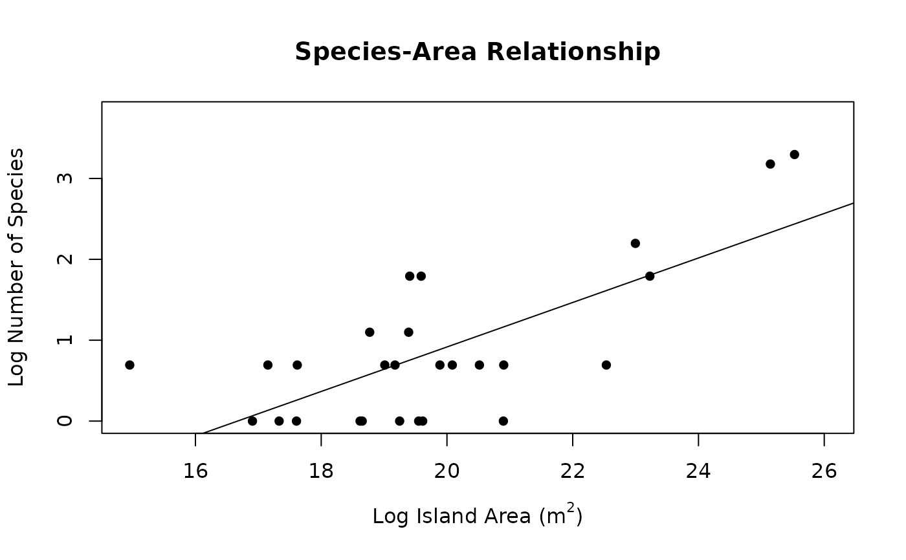

Function for plotting species-area relationship objects from the
SSARP::create_SAR() function
Usage
# S3 method for class 'SAR'
plot(x, ...)Examples
# The GBIF key for the Anolis genus is 8782549
# Obtained with: key <- get_key(query = "Anolis", rank = "genus")
key <- 8782549
# Read in example dataset obtained through:
# dat <- get_data(key = key, limit = 100)
dat <- read.csv(system.file("extdata",
"SSARP_Example_Dat.csv",
package = "SSARP"))
occs <- find_land(occurrences = dat)
areas <- find_areas(occs = occs)
#> ℹ Recording island names...
#> ℹ Assembling island dictionary...
#> ℹ Adding areas to final dataframe...
seg <- create_SAR(areas, npsi = 0)

plot(seg)